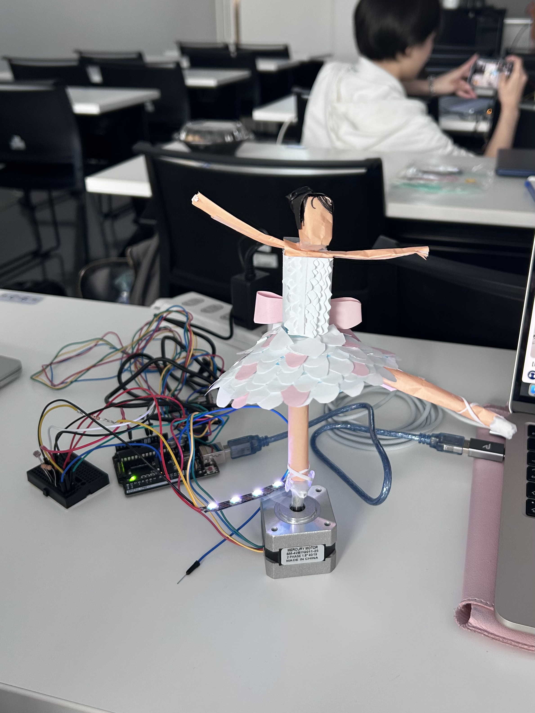
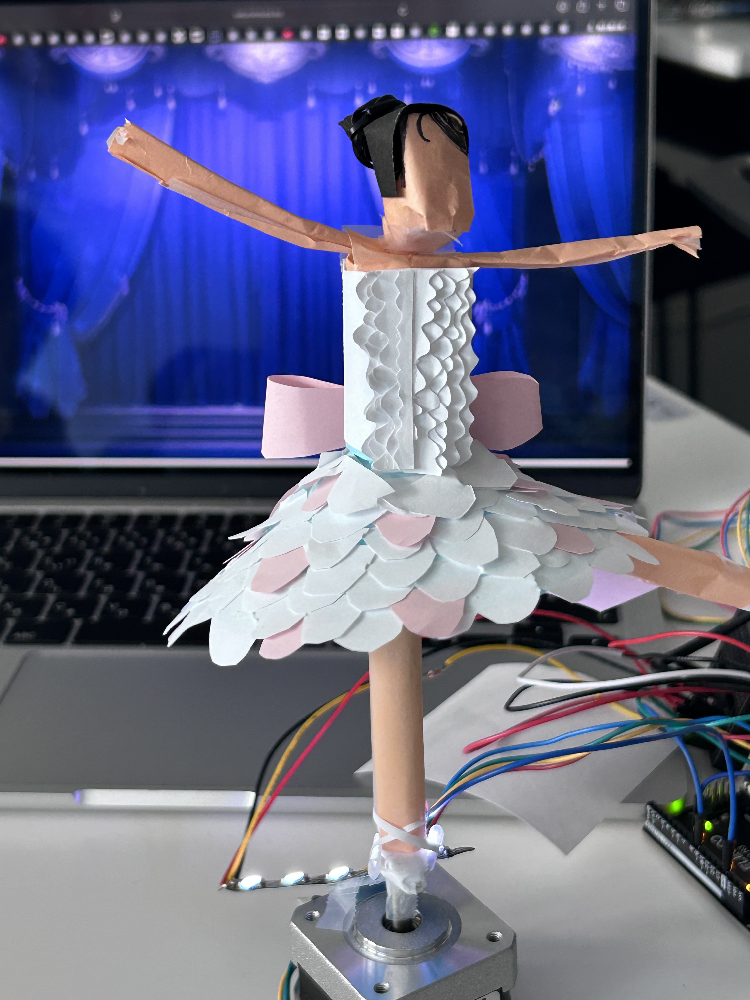

ardinoでオルゴール作り
ardino
ardinoとモーター、そしてLEDを使用してオルゴールのようにバレリーナが回るように作成した。


code
#include
#define PIN 11
#define NUMPIXELS 5
const int SENSOR = A1;
const int DIR = 8;
const int STEP = 9;
int threshold = 200;
int brightness = 50;
Adafruit_NeoPixel pixels(NUMPIXELS, PIN, NEO_GRB + NEO_KHZ800);
void setup() {
Serial.begin(9600);
pinMode(DIR, OUTPUT);
pinMode(STEP, OUTPUT);
pixels.begin();
pixels.setBrightness(brightness);
digitalWrite(DIR, HIGH); // 最初に回転方向固定
}
void loop() {
int val = analogRead(SENSOR);
Serial.println(val);
if (val > threshold) {
// 暗いときに光る
// NeoPixel点灯
pixels.clear();
for (int i = 0; i < NUMPIXELS; i++) {
pixels.setPixelColor(i, pixels.Color(100, 255, 100));
}
pixels.show();
// ずっとゆっくり回す
digitalWrite(STEP, HIGH);
delayMicroseconds(3000);
digitalWrite(STEP, LOW);
delayMicroseconds(3000);
} else {
pixels.clear();
pixels.show();
}
delay(10);
}
完成品動画
">